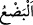
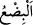
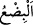
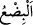

Rivâyet edilir ki Rasûlullah (s.a.) Rum kralı Kayser’e kendisini İslam’a çağıran bir
mektup yazdı. Kayser O’nun mektubunu okudu, öptü, başının ve gözlerinin üzerine
koydu. Ardından mektubu mühürledi ve göğsünün üzerine bağladı. Sonra Rasûlullah
(s.a.)’in mektubuna cevap olarak şu mektubu yazdı: “Şüphesiz biz senin peygamber
olduğuna şâhidlik ediyoruz. Fakat Allâh’ın Îsâ (a.s.) için seçtiği eski dini terk etmeye
gücümüz yetmiyor.”
(Bu mektup okununca) Hz. Peygamber (a.s.) memnun oldu ve şöyle buyurdu:
“(Mektubum yanlarında bulundukça) Onların saltanatı kıyâmete kadar devamlı
olacaktır.”[3] Farslar hakkında ise şöyle buyurdu: “Bir veya iki darbe yedi mi ondan
sonra Fars diye bir şey kalmaz. Rumların ise nesilleri çoktur. Ne zaman bir nesil
gitse/yok olsa yerine başka bir nesil geçer. Ebediyetin sonu ise ne kadar uzaktır!”[4]
Keşfü’l-esrâr’da böyle geçmektedir.
“Kayser öldü mü ondan sonra bir Kayser yoktur.”[5] hadîsinin mânâsı ise onun
saltanatı Şam’dan zâil olup gidince, orada kimse onun yerine geçmez, demektir. Öyle de
olmuş, onların saltanatı ancak Rum illerinde/beldelerinde kalmıştır. Nitekim İnsânü’l-
uyûn’da böyle geçmektedir.
Rasûlullah (s.a.) Fars kralı Kisrâ’ya da mektup gönderdi. Kisrâ, adı geçen
Hüsrev’dir. Kisrâ kelimesi, Hüsrev kelimesinin Arapçalaşmış hâlidir. Kisrâ,
Rasûlullah (s.a.)’in mektubunu yırtıp parçaladı, Rasûlullah (s.a.)’in elçisini öldürmek
istedikten sonra elçi geri döndü. Bunun üzerine Rasûlullah (s.a.) onun paramparça
olması için bedduâ etti. Allah da onların saltanatını paramparça etti. Onlar için asla
hükümranlık olmayacaktır.
“Halbuki onlar,” yâni Rumlar, “bu yenilgilerinden sonra” İranlılar tarafından mağlub
edilmelerinden, İranlıların kendilerine galip gelmesinden sonra “birkaç yıl içinde”
İranlılar’a “galip geleceklerdir.”
“
” eti kesmek demektir. “
” ise on sayısına ulaşmayan demektir. Bu kelimenin
üçten ona kadar olan sayıları, beşten çok ondan az sayıları ifâde ettiği de söylenir. el-
Kâmûs’ta üç ile dokuz arasındaki sayılar olduğu belirtilir. Keşfü’l-esrâr’da ise “
”
üç, beş, yedi ve dokuz sayılarının ismi olduğu zikredilir. Tefsîru’l-Münesebât’ta ise
şöyle der: “Bu kelime sayıların en aşağılarındandır. Çünkü birinci mertebededir ki o
birler basamağıdır. Âyette kulları âciz kılmak için bir tür bilgisizliğin boyunduruğunda
bırakmak üzere vakit, “
” kelimesi ile ifâde edilip açıkça tâyin edilmemiştir.”
Rivâyete göre Fars hükümdarı Hüsrev Pervîz, aynı zamanda kardeş olan iki
kumandanı Şehriyâr ve Ferhân’ı büyük bir ordu ile gönderdi. Rum hükümdarı, yâni
Hirakl Fars askerlerinin üzerlerine geldikleri haberini alınca, kumandanı Hıns’i
ordunun başına geçirdi ve onlara karşı gönderdi. Her iki ordu Zeriât denilen yerde
karşılaştılar.
Burası Şam’ın Arap ve Acem topraklarına en yakın yeridir. İranlılar Rumlara galip
geldi ve onların bazı beldelerini ellerinden aldılar. Bu haber Mekke’ye ulaştı.